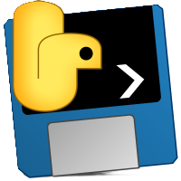

Projekt bersetzung
Logiciels destinés à la traduction de romans PDF
Description
Étant un grand passionné de lecture, mais ne maîtrisant pas encore suffisamment des langues comme l’allemand, l’anglais ou le japonais, j’avais envie de pouvoir lire des romans sans devoir attendre leur traduction en français. C’est pourquoi j’ai développé un logiciel capable de traduire des fichiers PDF.
Fonctionnalités Clés
📚 Interface simple d'utilisation
L'interface utilisateur intuitive permet de sélectionner facilement le fichier PDF à traduire et la langue cible. Un simple glisser-déposer du fichier suffit, et quelques clics permettent de lancer la traduction. Le processus est simplifié au maximum pour une utilisation sans connaissances techniques particulières.
Fichier traduit
Le logiciel génère automatiquement un nouveau fichier PDF contenant le texte traduit tout en conservant la mise en page originale. La traduction est réalisée paragraphe par paragraphe pour assurer une meilleure cohérence et fluidité du texte.
Technologies Utilisées
-
 Python
Python
-
 Tkinter
Tkinter
-
 Pyinstaller
Détails Techniques
- Version : 1.0.0
- Systèmes d'exploitation : Windows 10, 11
Statistiques
- Date de début Avril 2025
- Date de fin En cours